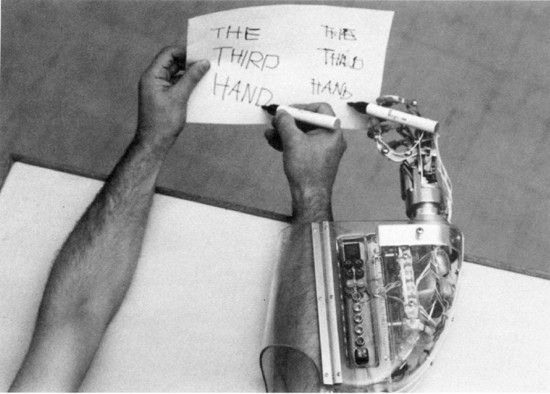

The “Manifesto for an Accelerationist Politics” (MAP)1 opens with a broad acknowledgment of the dramatic scenario of the current crisis: Cataclysm. The denial of the future. An imminent apocalypse. But don’t be afraid! There is nothing politico-theological here. Anyone attracted by that should not read this manifesto. There are also none of the shibboleths of contemporary discourse, or rather, only one: the collapse of the planet’s climate system. But while this is important, here it is completely subordinated to industrial policies, and approachable only on the basis of a criticism of those. What is at the center of the Manifesto is “the increasing automation in production processes,” including the automation of “intellectual labor,” which would explain the secular crisis of capitalism.2 Catastrophism? A misinterpretation of Marx’s notion of the tendency of the rate of profit to fall?3 I wouldn’t say that.
Here, the reality of the crisis is identified as neoliberalism’s aggression against the structure of class relations that was organized in the welfare state of the eighteenth and twentieth centuries; and the cause of the crisis lies in the obstruction of productive capacities by the new forms capitalist command had to assume against the new figures of living labor. In other words, capitalism had to react to and block the political potentiality of post-Fordist labor.
This is followed by a harsh criticism of both right-wing governmental forces, and of a good part of what remains of a Left—the latter often deceived (at best) by the new and impossible hypothesis of a Keynesian resistance, unable to imagine a radical alternative. Under these conditions, the future appears to have been cancelled by the imposition of a complete paralysis of the political imaginary. We cannot come out of this condition spontaneously. Only a systematic class-based approach to the construction of a new economy, along with a new political organization of workers, will make possible the reconstruction of hegemony and will put proletarian hands on a possible future.
There is still space for subversive knowledge!
The opening of this manifesto is adequate to the communist task of today. It represents a decided and decisive leap forward—necessary if we want to enter the terrain of revolutionary reflection. But above all, it gives a new “form” to the movement, with “form” here meaning a constitutive apparatus that is full of potentiality, and that aims to break the repressive and hierarchical horizon of state-supported contemporary capitalism. This is not about a reversal of the state-form in general; rather, it refers to potentiality against power—biopolitics against biopower. It is under this premise that the possibility of an emancipatory future is radically opposed to the present of capitalist dominion. And here, we can experiment with the “One divides into Two” formula that today constitutes the only rational premise of a subversive praxis (rather than its conclusion).4
Within and Against the Tendency of Capitalism
Let’s have a look at how the MAP theory develops. Its hypothesis is that the liberation of the potentiality of labor against the blockage determined by capitalism must happen within the evolution of capitalism itself. It is about pursuing economic growth and technological evolution (both of which are accompanied by growing social inequalities) in order to provoke a complete reversal of class relations. Within and against: the traditional refrain of Operaism returns.5 The process of liberation can only happen by accelerating capitalist development, but—and this is important—without confusing acceleration with speed,6 because acceleration here has all the characteristics of an engine-apparatus, of an experimental process of discovery and creation within the space of possibilities determined by capitalism itself.
In the Manifesto, the Marxian concept of “tendency” is coupled with a spatial analysis of the parameters of development: an insistence on the territory as “terra,” on all the processes of territorialization and deterritorialization, that was typical of Deleuze and Guattari. The fundamental issue here is the power of cognitive labor that is determined yet repressed by capitalism; constituted by capitalism yet reduced within the growing algorithmic automation of dominion; ontologically valorized (it increases the production of value), yet devalorized from the monetary and disciplinary point of view (not only within the current crisis but also throughout the entire story of the development and management of the state-form). With all due respect to those who still comically believe that revolutionary possibilities must be linked to the revival of the working class of the twentieth century, such a potentiality clarifies that we are still dealing with a class, but a different one, and one endowed with a higher power. It is the class of cognitive labor. This is the class to liberate, this is the class that has to free itself.
In this way, the recovery of the Marxian and Leninist concept of tendency is complete. Any “futurist” illusion, so to speak, has been removed, since it is class struggle that determines not only the movement of capitalism, but also the capacity to turn its highest abstraction into a solid machine for struggle.
The MAP’s argument is entirely based on this capacity to liberate the productive forces of cognitive labor. We have to remove any illusion of a return to Fordist labor; we have to finally grasp the shift from the hegemony of material labor to the hegemony of immaterial labor. Therefore, considering the command of capital over technology, it is necessary to attack “capital’s increasingly retrograde approach to technology.”7 Productive forces are limited by the command of capital. The key issue is then to liberate the latent productive forces, as revolutionary materialism has always done. It is on this “latency” that we must now dwell.
But before doing so, we should note how the Manifesto’s attention turns insistently to the issue of organization. The MAP deploys a strong criticism against the “horizontal” and “spontaneous” organizational concepts developed within contemporary movements, and against their understanding of “democracy as process.”8 According to the Manifesto, these are mere fetishistic determinations of democracy which have no effectual (destituent or constituent) consequences on the institutions of capitalist command. This last assertion is perhaps excessive, considering the current movements that oppose (albeit with neither alternatives nor proper tools) financial capital and its institutional materializations. When it comes to revolutionary transformation, we certainly cannot avoid a strong institutional transition, one stronger than any transition democratic horizontalism could ever propose. Planning is necessary—either before or after the revolutionary leap—in order to transform our abstract knowledge of tendency into the constituent power of postcapitalist and communist institutions to come. According to the MAP, such “planning” no longer constitutes the vertical command of the state over working class society; rather, today it must take the form of the convergence of productive and directional capacities into the Network. The following must be taken as a task to elaborate further: planning the struggle comes before planning production. We will discuss this later.
The Reappropriation of Fixed Capital
Let’s get back to us. First of all, the “Manifesto for an Accelerationist Politics” is about unleashing the power of cognitive labor by tearing it from its latency: “We surely do not yet know what a modern technosocial body can do!” Here, the Manifesto insists on two elements. The first element is what I would call the “reappropriation of fixed capital” and the consequent anthropological transformation of the working subject.9 The second element is sociopolitical: such a new potentiality of our bodies is essentially collective and political. In other words, the surplus added in production is derived primarily from socially productive cooperation. This is probably the most crucial passage of the Manifesto.10 With an attitude that attenuates the humanism present in philosophical critique, the MAP insists on the material and technical qualities of the corporeal reappropriation of fixed capital. Productive quantification, economic modeling, big data analysis, and the most abstract cognitive models are all appropriated by worker-subjects through education and science. The use of mathematical models and algorithms by capital does not make them a feature of capital. It is not a problem of mathematics—it is a problem of power.
No doubt, there is some optimism in this Manifesto. Such an optimistic perception of the technosocial body is not very useful for the critique of the complex human-machine relationship, but nonetheless this Machiavellian optimism helps us to dive into the discussion about organization, which is the most urgent one today. Once the discussion is brought back to the issue of power, it leads directly to the issue of organization. Says the MAP: the Left has to develop socio-technological hegemony—“material platforms of production, finance, logistics, and consumption can and will be reprogrammed and reformatted towards post-capitalist ends.”11 Without a doubt, there is a strong reliance on objectivity and materiality, on a sort of Dasein of development—and consequently a certain underestimation of the social, political, and cooperative elements that we assumed to be there when we agreed to the basic protocol: “One divides into Two.” However, such an underestimation should not prevent us from recognizing the importance of acquiring the highest techniques employed by capitalistic command, as well as the abstraction of labor, in order to bring them back to a communist administration performed “by the things themselves.” I understand the passage on technopolitical hegemony in this way: we first have to mature the whole complex of productive potentialities of cognitive labor in order to advance a new hegemony.
An Ecology of New Institutions
At this point, the problem of organization is properly posed. As already said, a new configuration of the relation between network and planning is proposed against extremist horizontalism. Against any peaceful conception of democracy as process, a new attention shifts from the means (voting, democratic representation, constitutional state, and so forth) to the ends (collective emancipation and self-government). Obviously, new illusions of centralism and empty reinterpretations of the “proletarian dictatorship” are not repeated by the authors. The MAP grasps the opportunity to clarify this by proposing a sort of “ecology of organizations,” insisting on a framework of multiple forces that come into resonance with each other and therefore manage to produce engines of collective decision-making beyond any sectarianism.12 You may have doubts about such a proposal; you may recognize difficulties that are greater than the happy options that are offered. Nevertheless, this is a direction to explore. This is even clearer today, at the end of the cycle of struggles that started in 2011, which have all shown insuperable limits regarding their forms of organization throughout their clashes with power, despite their strength and new genuine revolutionary contents.
The MAP proposes three urgent goals that are appropriate and realistic for the time being: First of all, building a new kind of intellectual infrastructure to support a new ideal project and the study of new economic models. Second, organizing a strong initiative on the terrain of mainstream mass media: the internet and social networks have undoubtedly democratized communication and they have been very useful for global struggles, yet communication still remains subjugated to its most traditional forms. The task becomes one of focusing substantial resources and all the energy possible in order to get our hands on adequate means of communication. The third goal is activating all possible institutional forms of class power (transitional and permanent, political and unionist, global and local). A unitary constitution of class power will be possible only through the assemblage and hybridization of all experiences developed so far, and those yet to be invented.
An Enlightenment aspiration—“the future needs to be constructed”—runs through the entire Manifesto.13 A Promethean and humanist politics resounds as well. Such a humanism, however, going beyond the limits imposed by capitalist society, is open to post-human and scientific utopias, reviving the dreams of twentieth-century space exploration or conceiving new impregnable barriers against death and all the accidents of life. Rational imagination must be accompanied by the collective fantasy of new worlds, organizing a strong self-valorization of labor and society. The most modern epoch that we have experienced has shown us that there is nothing but an Inside of globalization, that there is no longer an Outside. Today, however, reformulating again the issue of reconstructing the future, we have the necessity—and also the possibility—of bringing the Outside in, to breathe a powerful life into the Inside.
What can be said about this document? Some of us perceive it as an Anglo-Saxon complement to the perspective of post-Operaism—less inclined to revive socialist humanism, and better able to develop a new positive humanism. The name “accelerationism” is certainly unfortunate, as it ascribes a sense of “futurism” to something that is not at all futuristic. The document is undoubtedly timely, not only in its critique of “real” social democracy and socialism, but also in its analysis of social movements since 2011. It posits, with extreme strength, the issue of the tendency of capitalistic development, of the need for both its reappropriation and for its rupture. On this basis, it advances the construction of a communist program. These are strong legs on which to move forward.

On the Thresholds of Technopolitics
Some criticism may be useful at this point to reopen the discussion and push the argument forward towards points of agreement. Firstly, there is too much determinism in this project, both political and technological. The relation to historicity (or, if you prefer, to history, to contemporaneity, to praxis) is likely to be distorted by something that we are not inclined to call teleology, but that looks like teleology. The relation to singularities and therefore the capacity to understand tendency as virtual (involving singularities), and material determination (that pushes tendency forward) as a power of subjectivization, appears to me to be underestimated. Tendency can be defined only as an open relation, as a constitutive relation that is animated by class subjects. It may be objected that this insistence on openness may lead to perverse effects, for example, to a framework so heterogeneous that it becomes chaotic and therefore irresolvable—a multiplicity that is enlarged and made so gigantic that it constitutes a bad infinity. Undoubtedly such a “bad infinity” is what post-Operaism and even A Thousand Plateaus have sometimes appeared to suggest. This is a difficult and crucial point. Let’s dig further into it.
For this problem, the MAP has come up with a good solution when it places a transformative anthropology of the workers’ bodies right at the center of the relation between subject and object (what I would call the relation between the technical composition and the political composition of the proletariat, being traditionally accustomed to other terminologies).14 In this way, the drift of pluralism into a “bad infinity” can be avoided. However, if we want to continue on this ground—which I believe to be useful and decisive—we have to break the relentless progression of productive tension on which the Manifesto relies. We have to identify the thresholds of development and the consolidations of such thresholds—what Deleuze and Guattari would call agencements collectifs. These consolidations are the reappropriation of fixed capital and the transformation of labor power; they consist of anthropologies, languages, and activities. These historically constituted thresholds arise in the relationship between the technical and the political composition of the proletariat. Without such consolidations, a political program—as transitory as it may be—is impossible. It is precisely because we cannot clarify such a relationship between technical composition and political composition, that at times we find ourselves methodologically helpless and politically powerless. Conversely, it is the determination of a historic threshold and the awareness of a specific modality of technopolitical relations, which allows for the formulation of both an organizational process and an appropriate program of action.
Mind you: posing this problem implicitly raises the problem of how to better define the process in which the relationship between singularity and the common grows and consolidates (acknowledging the progressive nature of the productive tendency). We need to specify what the common is in any technological assemblage, while developing a specific study of the anthropology of production.
The Hegemony of Cooperation
To return again to the issue of the reappropriation of fixed capital: as I have pointed out, in the MAP, the cooperative dimension of production (and particularly the production of subjectivities) is underestimated in relation to technological criteria. Technical parameters of productivity aside, the material aspects of production in fact also describe the anthropological transformation of labor power. I insist on this point. The cooperative element does become central and conducive to a possible hegemony within the set of languages, algorithms, functions, and technological know-how that constitutes the contemporary proletariat. Such a statement comes from noticing that the structure itself of capitalist exploitation has now changed. Capital continues to exploit, but paradoxically in limited forms—when compared to its power of surplus-labor extraction from society as a whole. However, when we become aware of this new determination, we realize that fixed capital (i.e., the part of the capital directly involved in the production of surplus value) essentially establishes itself in the surplus determined by cooperation. Such a cooperation is something incommensurable: as Marx said, it is not the sum of the surplus labor of two or more workers but the surplus produced by the fact that they work together (in short, the surplus that is beyond the sum itself).15
If we assume the primacy of extractive capital over exploitative capital (including of course the latter into the former), we can reach some interesting conclusions. I will briefly mention one. The transition between Fordism and post-Fordism was once described as the application of “automation” to the factory and “informatization“ to society. The latter is of great importance in the process that leads to the complete (real) subsumption of society within capital—informatization is indeed interpreting and leading this tendency. Informatization is indeed more important than automation, which by itself, in that specific historical moment, managed to characterize a new social form only in a partial and precarious way. As the Manifesto clarifies and experience confirms, today we are well beyond that point. Productive society appears not only globally informatized, but such a computerized social world is in itself reorganized and automatized according to new criteria in the management of the labor market and new hierarchical parameters in the management of society. When production is socially generalized through cognitive work and social knowledge, informatization remains the most valuable form of fixed capital, while automation becomes the cement of capitalist organization, bending both informatics and the information society back into itself. Information technology is thus subordinated to automation. The command of capitalist algorithms is marked by this transformation of production.
We are thus at a higher level of real subsumption. Hence the great role played by logistics, which, after being automated, began to configure any and all territorial dimensions of capitalist command and to establish internal and external hierarchies of global space, as does the algorithmic machinery that centralizes and commands, by degrees of abstraction and branches of knowledge, with variables of frequency and function—that complex system of knowledge that since Marx we have been accustomed to calling General Intellect. Now, if extractive capitalism expands its power of exploitation extensively to any social infrastructure and intensively to any degree of abstraction of the productive machine (at any level of global finance, for instance), it will be necessary to reopen the debate on the reappropriation of fixed capital within such a practical and theoretical space. The construction of new struggles is to be measured according to such a space. Fixed capital can potentially be reappropriated by the proletariat. This is the potentiality that must be liberated.
The Currency of the Common and the Refusal of Labor
One last theme—omitted by the MAP, but entirely consistent with its theoretical argumentation—is “the currency of the common.” The authors of the Manifesto are well aware that today, money has the particular function—as an abstract machine—of being the supreme form of measurement of the value extracted from society through the real subsumption of this current society by capital. The same scheme that describes the extraction/exploitation of social labor forces us to recognize money: as measure-money, hierarchy-money, planning-money. Such a monetary abstraction, as a tendency of the becoming-hegemonic of financial capital itself, also points to potential forms of resistance and subversion at the same highest level. The communist program for a postcapitalist future should be carried out on this terrain, not only by advancing the proletarian reappropriation of wealth, but by building a hegemonic power—thus working on “the common” that is at the basis of both the highest extraction/abstraction of value from labor and its universal translation into money. This is today the meaning of “the currency of the common.” Nothing utopian, but rather a programmatic and paradigmatic indication of how to anticipate, within struggles, the attack on the measure of labor imposed by capital, on the hierarchies of surplus labor (imposed directly by bosses), and on the social general distribution of income imposed by the capitalist state. On this, a great deal of work is still to be done.
To conclude (though there are so many things left to discuss!), what does it mean to traverse the tendency of capitalism up to the end, and to beat capitalism itself in this process? Just one example: today it means to renew the slogan “Refusal of labor.” The struggle against algorithmic automation must positively catch the increase of productivity that is determined by it, and then it must enforce drastic reductions of the labor time disciplined or controlled by machines and, at the same time, it must result in consistent and increasingly substantial salary increases. On the one hand, the time at the service of automatons must be adjusted in a manner equal to all. On the other hand, a base income must be instituted so as to translate any figure of labor into the recognition of the equal participation of all in the construction of collective wealth. In this way, everyone will be able to freely increase to their best ability their own joie de vivre (recalling Marx’s appreciation of Fourier). All this must be immediately claimed through the struggle. And, at this point, we should not forget to open up another theme: the production of subjectivity, the agonistic use of passions, and the historical dialectics this opens against capitalist and sovereign command.
The “Manifesto for an Accelerationist Politics” (2013) by Alex Williams and Nick Srnicek can be read here →.
MAP 01.02.
The “tendency of the rate of profit to fall” is a classic problem of political economy. In Marx’s formulation, it describes the potential implosion of capitalism due to the fall of profits over the long term. See Karl Marx, Capital, vol. 3, chapter 13.
The expression “One divides into Two” refers to the irreversible class division occurring within capitalism. Specifically, the term originated in Maoist China in the 1960s to criticize any political recomposition with capitalism (“Two combines into One”). See also Mladen Dolar, “One Divides into Two,” e-flux journal 33 (March 2012) →
Since Mario Tronti’s essay on the so-called social factory (“La fabbrica e la società,” Quaderni Rossi, no. 2 [1962]), and across the whole tradition of Italian Operaism, the expression “within and against capital” means that class struggle operates within the contradictions of capitalist development that it generates. The working class is not “ouside capital,” as class struggle is the very engine that pushes capitalist development.
MAP 02.02.
MAP 03.03.
MAP 03.13.
In Marx (and traditionally in political economy), “fixed capital” refers to money invested in fixed assets, such as buildings, machinery, and infrastructures (as opposed to “circulating capital,” which includes raw materials and workers’ wages). In post-Fordism, this capital may include information technologies, personal media, and also intangible assets like software, patents, and forms of collective knowledge. The “reappropriation of fixed capital” refers then to the reappropriation of a productive capacity (also under the form of value and welfare) by the collectivity of workers.
MAP 03.06.
MAP 03.11.
MAP 03.15.
MAP 03.24.
The notion of class composition was introduced by Italian Operaism to overcome the trite debates on “class consciousness” typical of the 1960s. Technical composition refers to the all material and also cultural forms of labor in a specific economic regime; political composition refers to the clash with and transformation of these forms into a political project. A given technical composition is not automatically conducive to a virtuous political recomposition.
A canonical quote: “The sum total of the mechanical forces exerted by isolated workers differs from the social force that is developed when many hands cooperate in the same undivided operation.” Karl Marx, Capital, vol. 1 (London: Penguin, 1976), 443.
Category
Subject
Translated by Matteo Pasquinelli. Originally published in Italian on Euronomade.